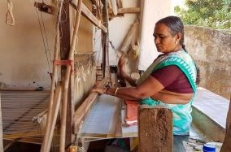

<!DOCTYPE html>
<html lang="en" dir="ltr">

<head>
  <meta charset="utf-8">
  <title>Latest news</title>
  <link rel="stylesheet" href="css/master.css">
</head>

<body>
  <section class="ps">
  <h1>Present Status</h1>
  <p>Handloom weaving is the prime occupation of Mangalagiri town. More than half of the population is dependent on the cottage industry for their living. As the global demand is increasing,
    this weave can now be found on kurtas, dupattas and stoles. Nizam-Zari borders are pretty
    popular for sarees. They also make customize designs and motifs with multiple colors for sarees and dresses with the help of chhota dhabi and bada dhabi (motif making machine). Similarly, they use natural dyes now instead of chemical dyes
    because of the increasing demand of
    natural dyes. Most varieties of Mangalagiri sarees are aged back to 200-300 years other than
    some recently developed sarees like ‘muthaka’, ‘silver-jeri’ and nizam border sarees.
    Even after being popular in global market the craft is facing a threat of extinction. As till the late
    90’s there were some 12,000 functional handlooms alone in the town but in 2018 it has shrunk
    to some 1500. The reason behind this depletion</p>
  <div class="points">
    <p>Is the mass production of power looms which made handlooms take a back seat in industry. </p>
    <p>Weavers are not ready to accept any advanced machinery to increase their production
      scale as making purely handloom sarees is their motto.</p>
    <p>Less paid for the skilled work as an average daily wage worker is paid more than these
      weavers.</p>
    <p>The upcoming generation is not pursuing weaving as their career because if its market uncertainty</p>
    <p>Majority of the current weavers are in their fifties, who are likely to set back from weaving in
      near future.</p>
    <p>The central government helping out these cooperative societies with scheming 20% of
      weavers under cooperative and 80% under private making weavers suffers the most.</p>
    <p>Most of the funds and subsidies that government provides doesn’t reach the weavers. So,
      they are mostly dependent on the private buyers.</p>
    <p>Though the demand has been stable or high throughout the decade, the craft is likely to be
      extinct because of the younger generation is reluctant to continue their lives as weavers</p>
  </div>

<p>The pandemic has also contributed to the deuteriation of this craft. As this industry is trying to
revive high-cost production and inequality in wages is adding the burden. The local demand
went down because of the rising price and now the saree is no longer affordable for working
class people. Mangalagiri saree are meant to be comfortable for work but now it is being compared to the crafts like ‘Kondapalli toys’.</p>
</section>
<section class="psa">
  
  <div class="para1">
  <h2>Handloom Artisan</h2>
  <p>Mangalagiri weavers have a good ratio of male and female workforce. Men in the family are
always accompanied by his wife during this process. Men dye the yarn and women do the
warping, sizing and threading. Weaving is done by both men and women. Children also sometimes contribute to the work. This is the reason; the weavers always live in a joint family as
each saree takes the continuous involvement of 7-8 members.
Weavers here have cooperative societies and almost 1200 artisans are appointed under each
of these societies. The youngest of them are over 35 years. their children are going to school
and choosing different career paths. As a result, they recent number of employees has fallen
down to 200-300 since no new workers are joining.
</p>
</div>
</section>
<section class="psb">
  <div class="para2">
  <h2>Modern Demands and Changes</h2>
  <p>Getting raw materials for the production is also becoming difficult. Government provides an
amount only to the owners / heads of these societies and not to the workers who do most of
the work. 80% of the workers don’t even own a home.
The brand that sells them cotton as raw material isn’t loyal to them. They keep hiking prices
and ignore the artisan’s demand for specific ‘yank yarn’. The brand focus more on exporting
the materials as there is an overseas demand for it. There is a constant hike in the yarn rates
for 4-5 months now. Recently, yarn was sold in Rs. 200 for 4.5kgs. no price limits setting on
yarns by either central or state government. This leads to indirect increase in the price of saree
by Rs (100-150).
There used to be a profit of Rs 150-Rs 200 for each saree but now as the demands went low
artisans are ready to sell them even for a profit of Rs. 50. The artisans used to trade in 13 different states but it has totally stopped due to lockdown.
The artisans took part in multiple exhibitions in Delhi, Bombay and Ahmedabad. They also
supply fabrics and sarees to FabIndia, Reliance and Tata. In this way production happened in
Mangalagiri town and exported to different stores as per the order. They also have a store in
Sardarjung Enclave, Delhi where they sold sarees. They went to Malaysia for a 10 days exhibition with help from the government to sell their products which helped in making new contacts.
 During the pandemic they started online business that helped them earn money during these
difficult times.
Demonetization and GST made their trading even worse which was only further worsened by
the pandemic . The artisan was used to travelling to different states to sell his goods but he
hasn’t been able to do that since the first lockdown.
</p>
</div>

</section>
</body>

</html>
